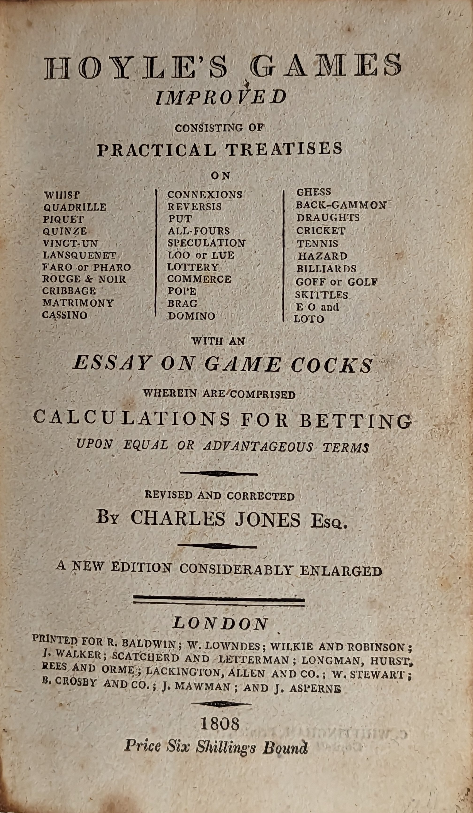

A Descriptive Bibliography of Edmond Hoyle
Copyright © 2014-26 by David Levy
(page updated 2025-05-12)User Guide
Jones.8
Hoyle's Games Improved, printed for R. Baldwin et al, eighth London edition, 1808.
 |
Title: | HOYLE'S GAMES | IMPROVED | CONSISTING OF | PRACTICAL TREATISES | ON | [11 lines to left of rule] WHIST | QUADRILLE | PIQUET | QUINZE | VINGT-UN | LANSQUENET | FARO or PHARO | ROUGE & NOIR | CRIBBAGE | MATRIMONY | CASSINO | [11 lines between two rules] CONNEXIONS | REVERSIS | PUT | ALL-FOURS | SPECULATION | LOO or LUE | LOTTERY | COMMERCE | POPE | BRAG | DOMINO | [11 lines to right of rule] CHESS | BACK-GAMMON | DRAUGHTS | CRICKET | TENNIS | HAZARD | BILLIARDS | GOFF or GOLF | SKITTLES | E O and | LOTO | WITH AN | ESSAY ON GAME COCKS | WHEREIN ARE COMPRISED | CALCULATIONS FOR BETTING | UPON EQUAL OR ADVANTAGEOUS TERMS | [short rule] | REVISED AND CORRECTED | By CHARLES JONES Esq. | [short rule] | A NEW EDITION CONSIDERABLY ENLARGED | [short oxford rule] | LONDON | PRINTED FOR R. BALDWIN; W. LOWNDES; WILKIE AND ROBINSON; | J. WALKER; SCATCHERD AND LETTERMAN; LONGMAN, HURST, | REES AND ORME; LACKINGTON, ALLEN AND CO.; W. STEWART; | B. CROSBY AND CO.; J. MAWMAN; AND J. ASPERNE | [short rule] | 1808 | Price Six Shillings Bound. |
| Collation: | 18o: [A]2 B–2N6 2O4 [$1,3 (−2O3) signed; signing $3 as '$2']; 216 leaves, pp. [i–iv], [1–2] 3–353 [354–355] 356–412 [413] 414–425 [426–428] [misprinting 284 as 28] |
| Contents: | Signature (Page) Reference | Contents | Signature (Page) Reference | Running Titles |
| A1r (i) | title | |||
| A1v (ii) | ‘C. WHITTINGHAM, Printer, | Goswell Street.’ | |||
| A2r (iii) | ‘CONTENTS.| [...]’ | |||
| A2v (iv) | "The undermentioned parts or treatises may be purchased separate.1. HOYLE'S GAMES IMPROVED AND SELECTED as a Companion to the Card Table [Jones.8-1], consisting of the twenty-two games first contained in this work. Price 3s. sewed, in a case like an almanack, with gilt edges. 2. HOYLE's GAME OF CHESS [Jones.8-2], with some Additions from other Amateurs, and a wood cut. Price 2s. in extra boards.3. HOYLE's TREATISE ON BACKGAMMON [Jones.8-3], with a wood cut. Price 6d. sewed.4. INTRODUCTION TO PAYNE'S GAME OF DRAUGHTS, [Jones.8-4], with a wood cut. Price 1s. sewed.5. DEW'S GAME OF BILLIARDS [Jones.2-1], with a copper-plate. Price 1s. sewed. 6. DIRECTIONS FOR BREEDING GAME COCKS [Jones.6-1], with a copper-plate. Price 6d. sewed.7. RULES AND INSTRUCTIONS FOR SKITTLES, with a copper-plate. Price 6d. on a sheet broad folio.N. B. The four first articles printed in the same size and manner as this book, but the two next are in 12mo. on a larger letter, and the last is for the purpose of pasting on a board." | |||
| B1r–B1v (1–2) | ‘THE | GAME OF WHIST. | [...]’ | B1v–G5v (2–70) | ‘WHIST.’ | |
| B1v–B2r (2–3) | ‘[...] | TWENTY-FOUR SHORT RULES FOR LEARNERS. | [...]’ | |||
| B2v (4) | ‘METHODS OF SCORING AT WHIST. | [...]’ | |||
| B2v–F5r (4–57) | ‘[...] | MR. HOYLE'S GAME AT WHIST. | [...]’ | |||
| F5r–G6r (57–71) | ‘[...] | MR. PAYNE'S MAXIMS FOR WHIST. | [...]’ | |||
| G6r–I3r (71–89) | ‘[...] | Mr. HOYLE's | GAME OF QUADRILLE. | [...]’ | G6r–I3r (71–89) | ‘QUADRILLE.’ | |
| I3r–I3v (89–90) | ‘[...] | ADDITIONS TO THE GAME OF QUADRILLE. | [...]’ | |||
| I3v–I6v (90–96) | ‘[...] | THE GAME OF PIQUET. | [...]’ | I3v–L3r (90–113) | ‘PIQUET.’ | |
| I6v–L2r (96–111) | ‘[...] | ‘MR. HOYLE’S GAME OF PIQUET. | [...]’ | |||
| L2r–L3v (111–114) | ‘[...] | LAWS OF THE GAME OF PIQUET. | [...]’ | |||
| L3v–L4r (114–115) | ‘[...] | THE GAME OF QUINZE. | [...]’ | L3v (114) | ‘QUINZE.’ | |
| L4r–L5r (115–117) | ‘[...] | THE GAME OF VINGT-UN. | [...]’ | L4r–L4v (115–116) | ‘VINGT-UN.’ | |
| L5r–L5v (117–118) | ‘[...] | THE GAME OF LANSQUENET. | [...]’ | L5r–L5v (117–118) | ‘LANSQUENET.’ | |
| L6r–M4r (119–127) | ‘THE GAME OF FARO. | [...]’ | L6r–M3v (119–126) | ‘FARO.’ | |
| M4r–M5v (127–130) | ‘[...] | THE GAME OF ROUGE ET NOIR | [...]’ | M4r–M5v (127–130) | ‘ROUGE ET NOIR.’ | |
| M6r–N4v (131–140) | ‘THE GAME OF CRIBBAGE. | [...]’ | M6r–N4v (131–140) | ‘CRIBBAGE.’ | |
| N5r–N5v (141–142) | ‘THE GAME OF MATRIMONY. | [...]’ | N5r (141) | ‘MATRIMONY.’ | |
| N5v–O1r (142–145) | ‘[...] | THE GAME OF CASSINO. | [...]’ | N5v–N6v (142–144) | ‘CASSINO.’ | |
| O1r–O1v (145–146) | ‘[...] | THE GAME OF CONNEXIONS. | [...]’ | O1r (145) | ‘CONNEXIONS.’ | |
| O1v–O4r (146–151) | ‘[...] | THE GAME OF REVERSIS. | [...]’ | O1v–O3v (146–150) | ‘REVERSIS.’ | |
| O4r–O4v (151–152) | ‘[...] | THE GAME OF PUT. | [...]’ | O4r (151) | ‘PUT.’ | |
| O4v–O5v (152–154) | ‘[...] | THE GAME OF ALL-FOURS. | [...]’ | O4v–O5r (152–153) | ‘ALL-FOURS.’ | |
| O5v–O6r (154–155) | ‘[...] | THE GAME OF SPECULATION. | [...]’ | O5v (154) | ‘SPECULATION.’ | |
| O6r–O6v (155–156) | ‘[...] | THE GAME OF LOO. | [...]’ | O6r (155) | ‘LOO.’ | |
| O6v–P1r (156–157) | ‘[...] | THE GAME OF LOTTERY. | [...]’ | O6v–P1r (156–157) | ‘LOTTERY.’ | |
| P1v–P2v (158–160) | ‘THE GAME OF COMMERCE. | [...]’ | P1v–P2v (158–160) | ‘COMMERCE.’ | |
| P3r–P3v (161–162) | ‘THE GAME OF POPE, or POPE JOAN. | [...]’ | P3r–P3v (161–162) | ‘POPE, or POPE JOAN.’ | |
| P4r–P5r (163–165) | ‘THE GAME OF BRAG. | [...]’ | P4r–P4v (163–164) | ‘BRAG.’ | |
| P5r–P5v (165–166) | ‘[...] | THE GAME OF DOMINO. | [...]’ | P5r (165) | ‘DOMINO.’ | |
| P5v–Q4r (166–175) | ‘[...] | THE GAME OF CHESS. | [...]’ | P5v–Z2r (166–255) | ‘CHESS.’ | |
| Q4v–R5r (176–189) | ‘MR. HOYLE'S RULES FOR CHESS. | [...]’ | |||
| R5r–R5v (189–190) | ‘[...] | LAWS OF CHESS. | [...]’ | |||
| R6r–T3v (191–210) | ‘MR. HOYLE'S CHESS LECTURES. | [...]’ | |||
| T4r–Z2r (211–255) | ‘PHILIDOR'S SELECT GAMES AT CHESS. | [...]’ | |||
| Z2v–Z3r (256–257) | ‘[...] | THE GAME OF BACK-GAMMON. | [...]’ | Z2v–2B1r (256–277) | ‘BACK-GAMMON.’ | |
| Z3r–2B1v (257–278) | ‘[...] | MR. HOYLE's | TREATISE OF BACK GAMMON. | [...]’ | |||
| 2B1v–2E2v (278–316) | ‘[...] | Mr. PAYNE'S GAME OF DRAUGHTS. | [...]’ | 2B1v–2E2r (278–315) | ‘DRAUGHTS.’ | |
| 2E2v–2E4r (316–319) | ‘[...] | THE LAWS OF CRICKET. | [...]’ | 2E2v–2E3v (316–318) | ‘CRICKET.’ | |
| 2E4r–2E6r (319–323) | ‘[...] | THE GAME OF TENNIS. | [...]’ | 2E4r–2E5v (319–322) | ‘TENNIS.’ | |
| 2E6r–2F2r (323–327) | ‘[...] | THE GAME OF HAZARD. | [...]’ | 2E6r–2F1v (323–326) | ‘HAZARD.’ | |
| 2F2r–2I6v (327–372) | ‘[...] | MR. DEW'S | GAME OF BILLIARDS.’ | 2F2r–2I6r (327–371) | ‘BILLIARDS.’ | |
| on 2H3v–2H4r (354–355) | blank | |||
| 2I6v–2K1v (372–374) | ‘[...] | THE GAME OF GOFF, OR GOLF. | [...]’ | 2I6v–2K1r (372–373) | ‘GOFF.’ | |
| 2K1v–2K3v (374–378) | ‘[...] | THE GAME OF SKITTLES. | [...]’ | 2K1v–2K3r (374–377) | ‘SKITTLES.’ | |
| 2K3v (378) | ‘[...] | THE GAME OF E O. | [...]’ | 2K3v (378) | ‘E O.’ | |
| 2K4r–2K5v (379–382) | ‘THE GAME OF LOTO. | [...]’ | 2K4r–2K5r (379–381) | ‘LOTO.’ | |
| 2K5v–2N2v (382–412) | ‘[...] | TREATISE ON GAME-COCKS. | [...]’ | 2K5v–2N2v (382–412) | ‘GAME COCKS.’ | |
| 2N3r–2O3r (413–425) | ‘ADDITIONS TO WHIST. | [...] | [colophon]’ | 2N3v–2O3r (414–425) | ‘ADDITIONS TO WHIST.’ | |
| 2O3v–2O4r (426–427) | ‘BOOKS | PRINTED FOR THE PROPRIETORS. | [...]’ | 2O4r (427) | ‘BOOKS PRINTED FOR THE PROPRIETORS’ | |
| 2O4v (428) | ‘LATELY PUBLISHED, | [...]’ |
| Plates: | on M4v(128) woodblock: a tapis or cloth covering the Rouge et Noir table on P6r(167) woodblock: ‘CHESS MEN | [...] | ..THE CHESS BOARD.’ on Z2v(256) woodblock: a backgammon board showing the starting position on 2B2v(280) woodblock: ‘DRAUGHT TABLE. | [...]’ before 2H3v(354) copperplate: ‘PLAN OF FORTICATION BILLIARDS.’ before 2H4r(355) copperplate: ‘PERSPECTIVE VIEW OF FORTICATION BILLIARDS.’ |
| Publisher: | Robert Baldwin I, William Lowndes, Wilkie and Robinson, J. Walker, Scatcherd and Letterman, Longman, Hurst, Rees, and Orme, Lackington, Allen and Co., William Stewart, B. Crosby and Co., Joseph Mawman, James Asperne |
| Printer: | Charles Whittingham (Chiswick Press Papers, colophon, Longman Archives) |
| Notices: | 1808-06-04 Jackson's Oxford Journal: "Charles Jones's Hoyle's Games Imrpoved, including thirty-four fashionable games, with directions for playing and betting thereon; in a pocket volume, price 6 s. bound in red." |
| Price: | 6s. (advertisement, title) |
| References: | Horr 740, Jessel 923, Rather 95 |
| Colophon: | ‘C. WHITTINGHAM, Printer, Goswell Street.’ |
| Copies Seen: | BFl [I.795/HOYL (b1163124)]; E [L.C.1973]; E [PCL.Add.1]; O [Jessel f.602]; Copisarow [2 copies]; OCl [789.87H G8J2]; Levy [1149] |
| Other Copies: | Lv [276.F.11]; NT [Belton 144]; NT [Canons Ashby M.1.8]; Sings; HAG [KW 972 F 35]; LT [DAM 199]; CaBVaU [GV1241.H68 1808]; CaNSSCBU [GV1243.H85 1808]; LU [GV1243.H854 1808]; NN [MZ (Hoyle. Hoyle's games)]; NN [MZ (Hoyle. Hoyle's games) c.2]; NvLN [GV1241.H69 1808]; AuANL [4701717] |
| Notes: | The text on skittles is taken from the broadside Rules and instructions for playing at skittles By a Society of Gentlemen. London: printed for G. Kearsley, 1786. (ESTC T228506). There is a later reprint of the broadside and perhaps the reprint is what is advertised on A2v(iv). |